● 北大 HCI 通识课业界讲座 · 2026 · 05 · 07 · 文史 108
● 北大 HCI 通识课业界讲座 · 2026 · 05 · 07 · 文史 108Agent 时代的产品实践
关于我 who's behind this
- 2026.01 — 至今：和 AI 一起协作的独立开发者 / AI 创业者
- 2019 — 2026.01：大厂产品经理（先后在网易、猿辅导任职），前 Motiff 妙多 AI 产品负责人
一个调研 show of hands
今天分享三块内容 three parts
AI 从业者 + 独立开发者视角的观察与实践。
- § 1过去一年的变化与演进
- § 3AI Coding 实践
- § 4AI 工具箱
过去一年的
演进路线 a year in review
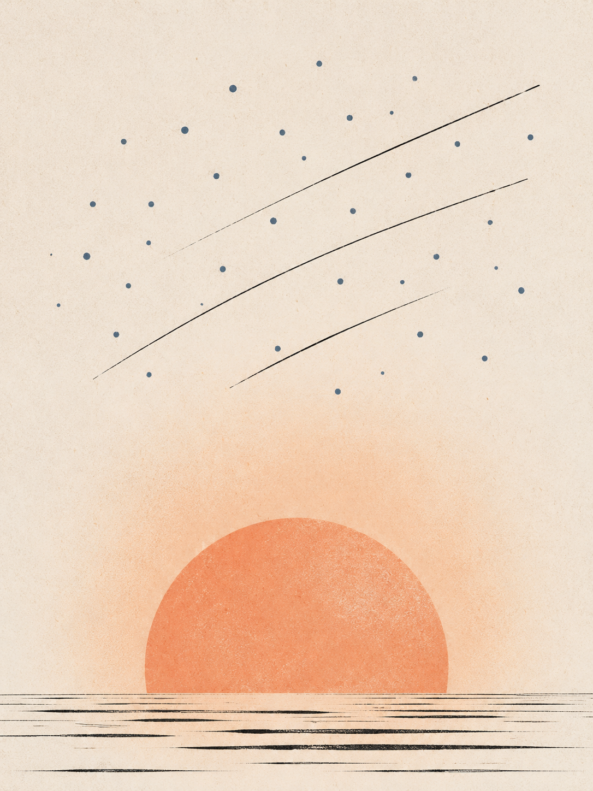
主线一：AI Coding —— 从「能用」到「吞噬一切」
加粗 = 对业界产生巨大影响的模型 · 图标 = 发布机构
配套关键工具：Cursor → Lovable → Bolt → Replit Agent → Claude Code / Codex
主线二：AI 生图 —— 文本渲染与可控性的两次跨越
加粗的事件 = 在对应时间点对业界产生巨大影响的模型。
当前 SOTA：GPT-Image-2 multilingual text rendering
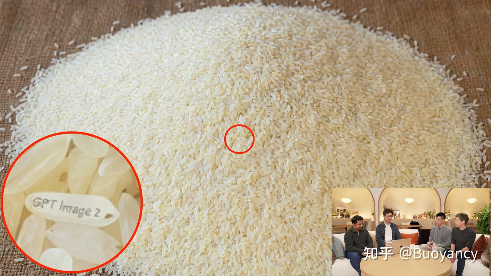
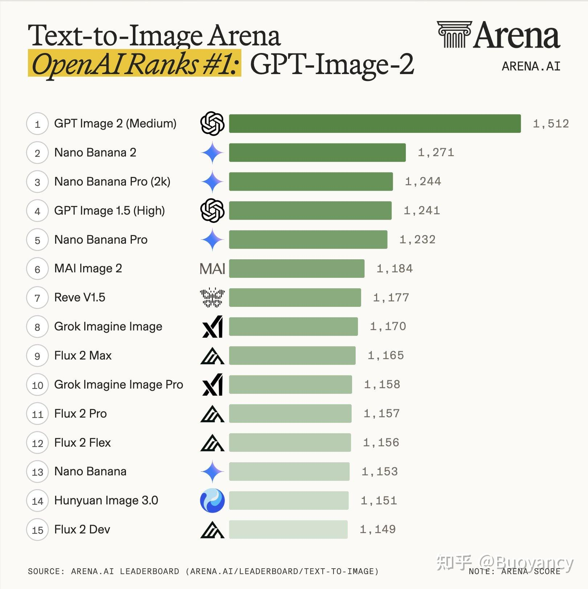
宏观：Agent + SOTA 模型正在吞噬传统软件
- 案例：Anthropic 2026-04-17 发布 Claude Design 当天，Figma 股价再跌约 5%（过去 12 个月已累计跌约 50%）
- 类似的故事此前已多次上演：Stitch（Google Labs，2025-05 I/O 首发，2026-03 公开升级）发布时 Figma 股价当日跌 4%+
微观：AI Coding 把软件生产门槛压到地板
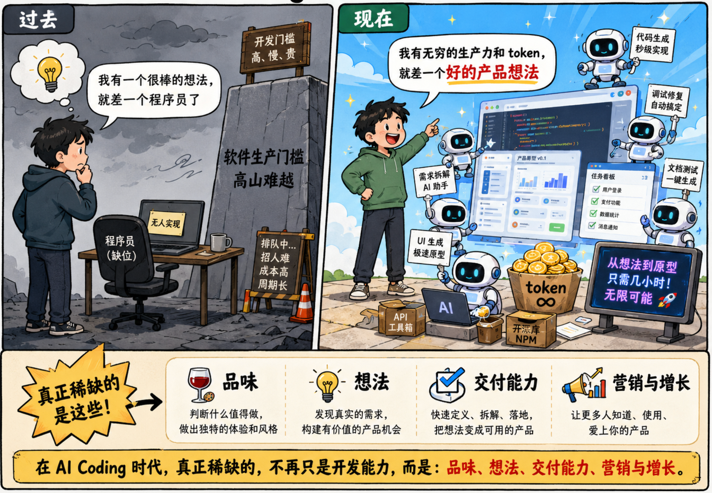
产品经理、设计师、工程师 —— 三阶段演进 a ride-hailing example
线性 hand-off → 闭环 maker linear → loop
每一步要等下一个角色接手 · slow
+ agents → 上线 ⟲
实时回环 · 同一人闭环到上线 · realtime
关键能力迁移：执行力 → 需求定义 · 产品定义 · 增长 · 营销
"代码能力" 不再是入门门槛 —— 现在不是了。
Figma vs Google Stitch / Claude Design / Lovable
当 60 分够用时，AI 就够了；Figma 这类工具只剩极致专业化这条路（极少数高标准设计需求）。
类似故事在不断上演。
独立开发
完整链路 end-to-end
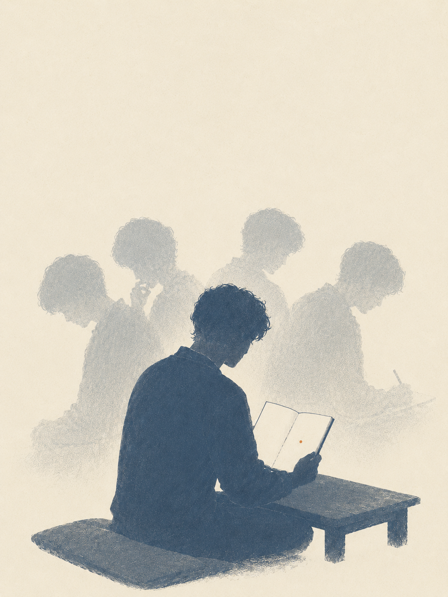
案例 A · AIBT（AI 性格测试）overnight: idea → build
一晚速通的 idea → build
- 起点：当晚看到 SBTI 爆火 → "能不能做一个给 AI 测 MBTI 的版本？"
- SBTI（Sixteen Brand Type Indicator）= AI 时代衍生出的"品牌人格"测试热点
- 产品：https://aibtapp.com/zh/
- 复盘 slides：img.bryantchen.cc/slides/aibt-intro

AIBT · 核心设计 + 工具栈 + 发布
这个案例的关键不是"我会写代码"，而是提示词设计：给 LLM 喂什么、回什么、怎么让用户愿意分享。
核心设计
视觉：黑客帝国粒子效果
数据：提示词一键拉对话记录做分析
分享钩子：你是键盘的哪个键 / 用户喜欢的语言风格
工具栈
Claude Code · 设计 + 开发
Cloudflare · 域名 + 部署 + 数据分析
一个人 + agent 一夜跑通整条链
发布
各种 AI 微信群 · Reddit AI 频道
不是 PR 稿，是开发者社区原生分享
案例 B · ClawPuter xhs build-in-public driven iteration
- 起点：「如果 OpenClaw 有真实物理形态，会是什么样？」
- 创作目标：好玩有趣 + 流量 / 账号冷启动
- 复盘 slides：img.bryantchen.cc/slides/clawputer-story

github.com/bryant24hao/ClawPuter
github.com/bryant24hao/deskpet-firmware
ClawPuter · 项目历程与总结
这个案例的关键是 build in public：让小红书的反馈直接驱动迭代，而不是闭门做完再上线。
核心设计
形态：桌面宠物 + 互动玩法
视觉：像素风 / 复古 / 拓麻歌子
关键词：陪伴 · 温度
工具栈
Claude Code · 嵌入式开发也能做好
Build in Public · 小红书互动 + 实时反馈
开发即营销
发布
X · 小红书 · Reddit · GitHub 开源
多平台分发，长尾内容持续带流量
案例 C · ColorWander prototype → ship
一句话介绍：用颜色看世界，从你的照片中提取颜色并作为相框背景，生成 colorwalk 的照片。

ColorWander · 项目实践 from prototype to App Store
Idea
想法验证
Design
设计原型
AI Coding
实操 5 分钟跑通
Eval & Ship
把 0.8 推到 1.0
BIP
build in public
3.1 Idea → 想法验证
一切的源头——
多数需求都不值得做，
但很多时候我们会忽视这一步。
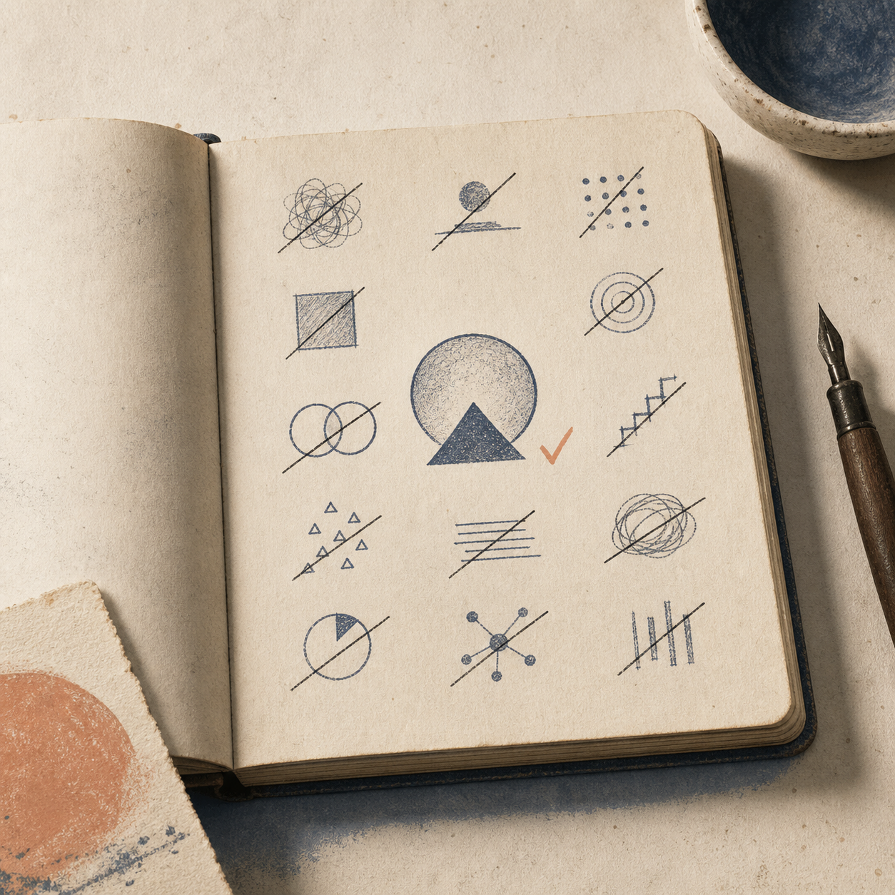
方法：用 agent 跑 BRD
在 Claude Code / Codex 里强制加载一个 BRD Skill
Skill = 把「重复做某件事的最佳实践」写成可被 agent 按需加载的能力包
→ 右侧：BRD Skill 实物片段 · 3 小时 > 3 个月 · 写代码前先验证市场
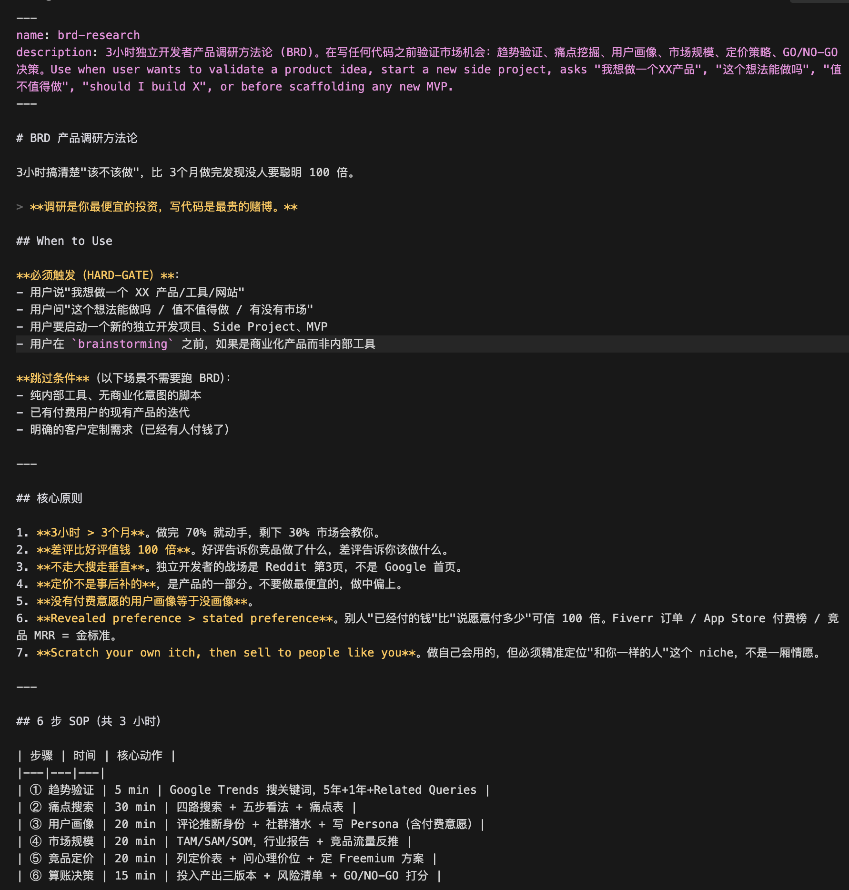
我自己的实践 · 100 Bad Ideas
踩过的坑：很多很酷的 idea，用户需求并不强烈或场景不通—— e.g. MemoryX 这款 Chrome 扩展
现在的做法：维护一个 100 Bad Ideas 仓库， 一切 idea 默认是 "bad"，先找反例 → 再决定 埋葬 / 孵化 / 继续观察。
github.com/bryant24hao/100-bad-ideas · 未对外开放，仅现场演示
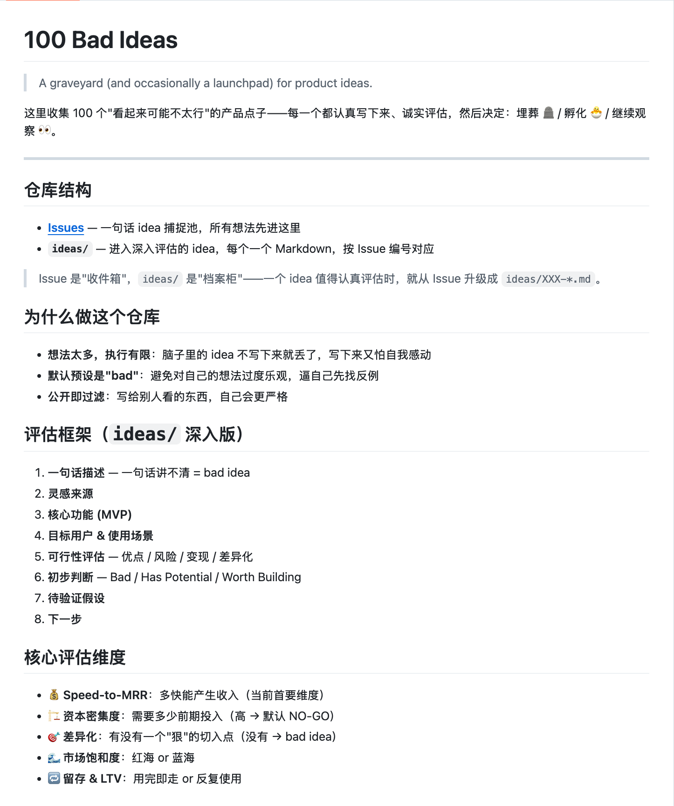
现场 demo：怎么验证一个 idea
先让 agent 跑 BRD，再用客观信号交叉检验。
3.2 产品定义 → 设计原型
启动前，不要急着画 wireframe —— 先用 4 个问题逼自己说清楚。
你想做什么？
一句话概括产品 + 目标用户。
说不清 = 还没准备好画原型
对标谁？
明确说出你想接近哪一类产品。
"参考 Notion、Figma、Linear 综合体" = 没对标
视觉风格？
引用真实产品 / 风格名 / 关键词。
"高级一点" = 没风格
差异化是什么？
为什么用户选你不选对标？
"AI 加持" = 没差异
如何做出好设计
先给 agent 一个 design brief，再让它产出界面。
风格坐标
不是“好看一点”，而是明确说出你要接近哪类产品、哪种视觉气质。
设计约束
颜色、字体、圆角、密度、动效、组件风格都要可复用，避免每页重新发明。
可迭代记忆
DESIGN.md 把审美判断沉淀成上下文，让多轮改稿不跑偏。
设计风格不是术语表，是给 agent 的坐标系
把“我想要什么感觉”翻译成 agent 能执行的约束：秩序、质感、人群。
界面秩序
极简、瑞士、Material、Ant Design：决定信息密度和组件规则。
视觉质感
拟物、玻璃、卡片、暗黑、高对比：决定页面的触感和层次。
人群语境
杂志、摄影、像素、二次元、潮流：决定用户第一眼的归属感。
一些风格举例 six common registers
极简 / 瑞士
适合效率工具、知识产品、专业服务。
杂志 / 编辑
适合内容、作品集、讲故事的产品。
玻璃 / 分层
适合 AI、空间感、数据可视化。
复古 / 像素
适合玩具、游戏、社区、怀旧表达。
轻奢 / 高级感
适合摄影、生活方式、审美消费。
粗野 / 高对比
适合强态度、开发者工具、实验项目。
把风格词写进 prompt，要像写产品需求
“做得高级一点”
这类表达没有边界，agent 只能随机套模板。
目标用户 + 参考产品
+ 视觉风格 + 约束
例如：面向独立开发者的 AI 工具，参考 Linear + Raycast，瑞士风网格、低饱和、密集但清晰。
现场可以这样演示：同一个产品，三种风格
Linear-like
高密度、灰阶、快捷键、适合专业工具。
Editorial
大标题、照片、故事感、适合内容产品。
Playful
插画、强色彩、轻动效、适合消费和社区。
设计资源只分三类：生成、参考、沉淀
给学生的动作：先收藏，不要现场抄链接
找一个对标产品
Mobbin / UI Notes：截图 3 个你喜欢的界面状态。
写一句风格描述
用“用户 + 场景 + 气质 + 约束”描述，而不是只说高级。
生成第一版原型
让 agent 同时产出 UI 和 DESIGN.md，后面迭代才有一致性。
3.3 AI Coding 入门 + 实操
叫法在变 (Vibe Coding → Agentic Engineering → ...) ，核心不变 —— 人利用 AI 做出可用产品的一种方法
如何入门
不要先学概念，先把一个真实页面做出来。
现场 demo：5 分钟跑通第一个 AI Coding 任务
现场我会真的打开 Claude Code，用一个北大学生场景跑这三步。
Plan
~ 1 min让 agent 先写计划 + 验收标准，再写代码。
> 我想做一个北大食堂"今天该吃什么"小工具，
随机抽一个菜 + 一句吐槽。先给我 5 步实现计划
和验收标准，不要写代码。
Execute
~ 3 min同意计划后让它一次写完，边界用 ASCII wireframe 或 GitHub Issue 描述。
> 同意，按这个计划写出来。布局参考下面的 ascii：
┌──── 今天该吃 ────┐
│ 〔随机抽签按钮〕 │
│ → 菜名 · 吐槽 │
└──────────────┘
Review
~ 1 min审规格 + 真实跑通，不逐行读代码——浏览器里点一下，发现问题再返工。
> 跑起来后，按钮没居中，菜名重复了。
修这两点，并加一个"再来一次"按钮。
3.4 Eval & Ship
AI 负责放大产能，人负责最后一公里的判断。
Build in Public
普通人最易得的「市场调研 + 用户增长」方法。
什么是 Build in Public？
把产品从“闭门造车”变成“公开迭代”。
为什么要 Build in Public
先获得注意力
产品需要被看见；注意力是最早的市场信号。
低成本验证
评论、私信、转发，比闭门访谈更快暴露真实兴趣。
内容会复利
过去发布的进度，会持续为未来版本带来新用户。
别只发一条动态，要搭一条增长链路
每一步都有自己的产物，产品页是中枢——前面把人引来，后面把内容沉淀回去。
社媒 / 社区
X · Threads · 小红书 · 抖音 · Reddit · HN · B 站 · 微信群
引流产品页
一句话价值主张 · Demo · 等候名单 / 下载入口
承接首发
Product Hunt · 开源 · 公众号长文
爆发沉淀
SEO · 外链 · 复盘文章 · 案例归档
复利→ 关键不是渠道有多少，而是四种节奏都要有：日常曝光 + 单点爆发 + 中枢承接 + 长尾复利。
如何做好 Build in Public
四条原则有先后：前提 → 内容 → 频率 → 受众，缺前一条做后一条都白做。
真诚
像一个真实的人，不像品牌公告。
反例：「重磅发布、敬请期待」式的公关稿
利他
让读者获得经验、模板、避坑或灵感。
反例：只贴自己产品截图，不解释能解决谁的问题
持续
不是爆款思维，而是反复出现在信息流。
反例：发一条爆款、然后消失三个月
匹配
读者要尽量靠近你的真实目标用户。
反例：在小红书发开发者深度长文 / 在 HN 发美妆 vlog
工具箱 2026
+ 怎么选 toolbox
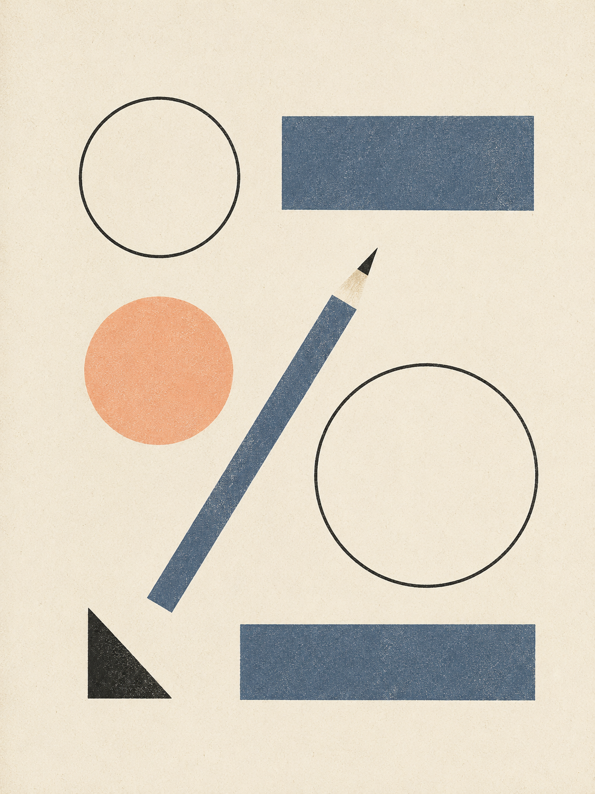
工具变化太快——用判断力代替被动选择
现在听到的工具名，半年后可能已经过期。不要背工具清单，要建立自己的判断标准——下面三条原则比任何工具列表都活得久。
任务原生
写代码选 coding agent，做原型选 design agent，内容生产选多模态工具。
工作流重塑
优先选择改变工作方式的工具，而不是只多一个按钮的工具。
生态信号
看 Frontier Labs、开源社区、真实 builder 是否在持续使用。
把工具放进任务地图，而不是收藏夹
Build
Claude Code / Codex / Cursor
Prototype
Stitch / Claude Design / Lovable
Content
Image / Video / Voice / Music
主线讲"我现在要完成什么任务"；下一页给完整清单作为参考。
2026-05 工具清单 snapshot · for reference
这页是给课后参考的快照——下面每条都标了发布时间，方便你判断哪条信息已经过期。
不要选产品，要选判断力
操作建议：每 2 个月做一次 AI / Agent 盘点
Be a Builder.
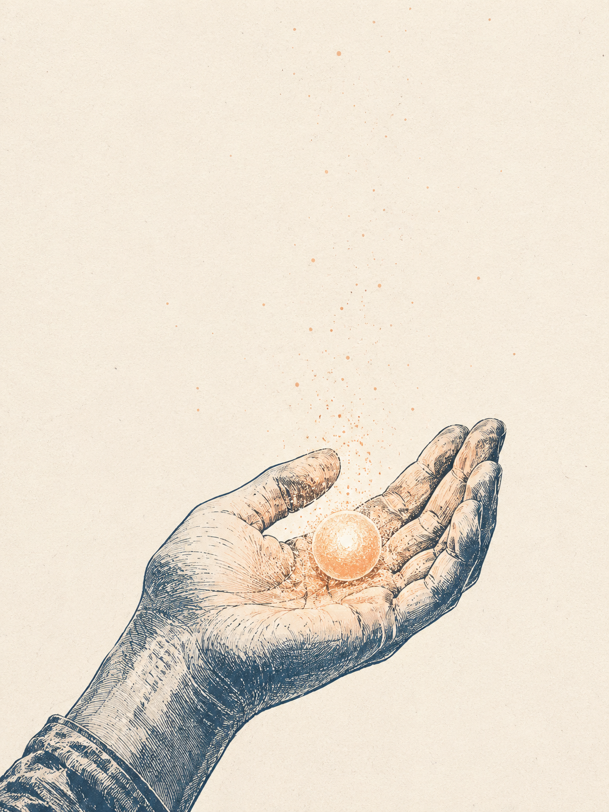
给在座同学的两句话
门槛比你想象的低 100 倍
脑子里那个想法，今晚可能就能跑通—— Get Hands Dirty Now，不要等"我学完了再开始"。
每个人都会是 Agent 编排者
未来未必所有人都做 PM / 工程师，但管理好 agent 是我们这一代的事—— 某种程度上，agent 的可控性和聪明度比人更高。
一些心得：去年 → 今年的迁移
Dive into AI
Collaborate with Agents
不再是把 AI 加进工具，而是把 agent 当作协作者编排。
Stay Curious
Context & Taste
好奇心是入场券，差异来自你的上下文、审美、经历和活人感——这些 AI 复制不来。
Find PMF
Play Your Game
先想清楚：你到底在为谁吸引注意力？
Play Your Game · 你在为谁吸引注意力？
同样一份精力做产品，受众选择不同，决定的事完全不一样。
自己
做到极致是艺术，做不到极致大多数时候是自嗨。
Agent
新的设计对象——为 agent 设计 prompt / context / workflow，是当下和未来都要做的事。
其他人
用户规模决定商业模式和市场天花板。1000 个真粉 vs 100 万用户，是两种产品。
如何应对快速变化
两件事：身心是底层燃料，方向是节奏感。
保持健康的身心
运动 · 睡眠 · 可持续的节奏。
变化越快，能持续就赢一半——身心是这个时代独立开发者的底层资产。
先做自己喜欢的事 / 产品
从兴趣出发，先利己，再利他。
不喜欢的事坚持不了 6 个月；喜欢的事能熬过低谷，持续就是壁垒。
最后
祝大家在 Agent 时代 Make Something Wonderful！
Q&A
谢谢大家
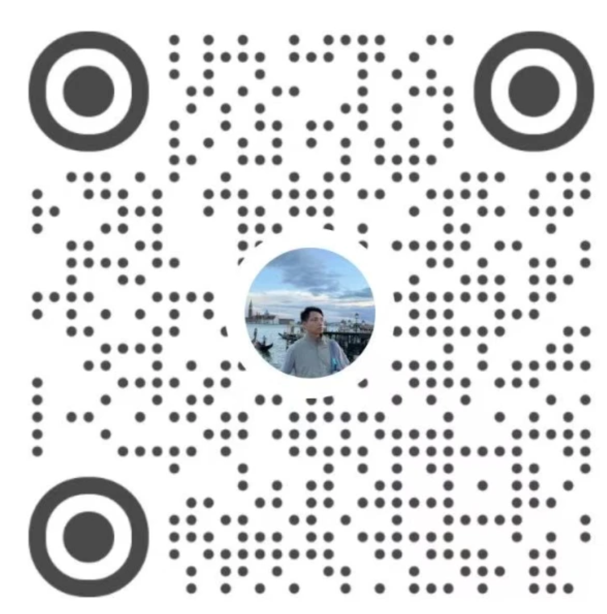